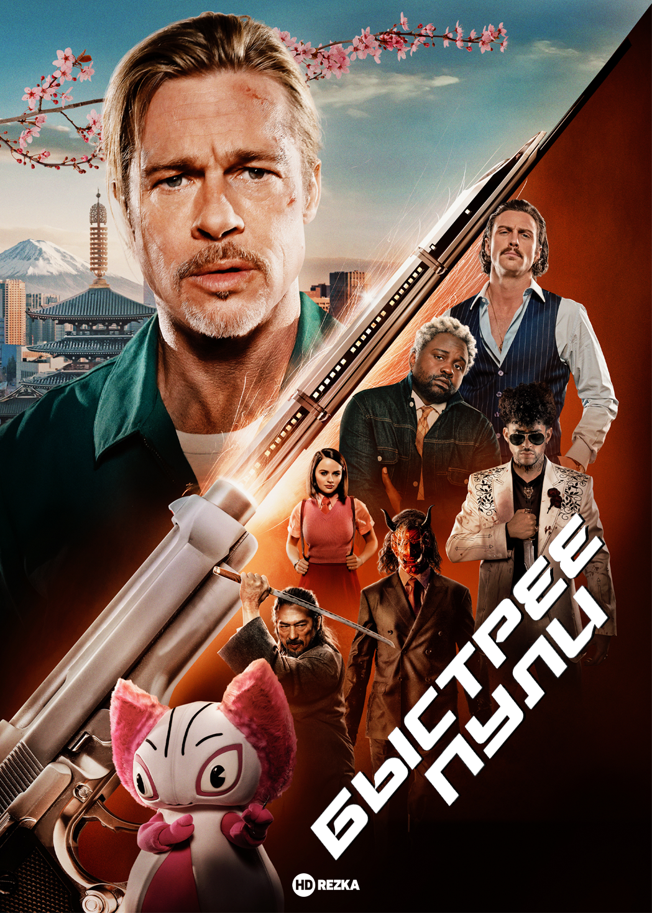
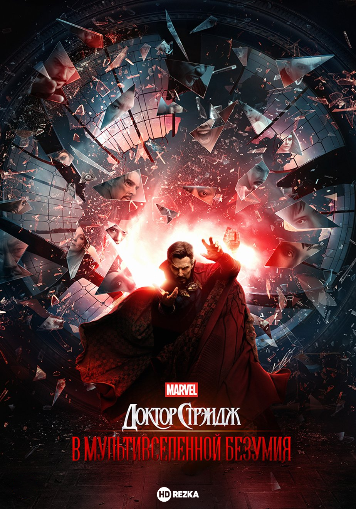
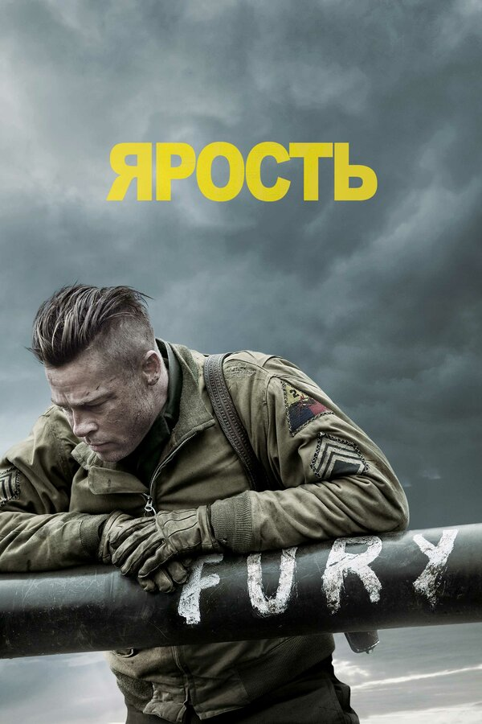
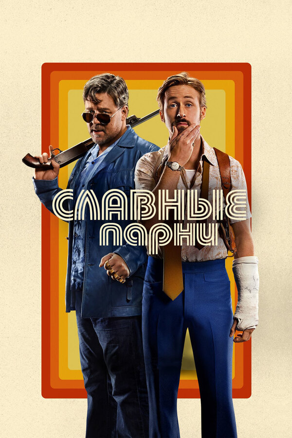

Bullet Train

Во главе истории находится профессиональный наемный убийца по прозвищу «Божья коровка»,
который по поручению
своего куратора соглашается на новое задание в Японии. Он садится на инновационный сверхскоростной поезд,
движущийся из Токио в Мориоку, чтобы разыскать и похитить таинственный чемодан, однако сталкивается с
непредвиденными трудностями. Как вскоре выясняется, помимо него здесь оказываются еще несколько хладнокровных
киллеров со схожей целью, что превращает поездку на поезде в экстремальную безостановочную бойню.
Доктор Стрэндж: В мультивселенной безумия

Доктор Стивен Стрэндж отправляется на свадебное торжество своей бывшей коллеги Кристен
Палмер, попутно размышляя о собственном будущем. Измученный причудливыми снами о загадочной фигуре, Стрэндж
вступает в контакт с Америкой Чавес — девочкой-подростком, скрывающейся от смертоносной силы, которая хочет
похитить способность девочки путешествовать по мультивселенной. Вместе с Вонгом и Вандой Максимофф Стрэндж
намерен защитить девочку, и для этого супергерои сперва должны выследить могущественного злодея, ведущего на
неё охоту.
Чудаки навсегда

Спустя десять лет знаменитая команда «Чудаков» воссоединяется. Джонни Ноксвилл, Ви Мен,
Стив-О, Крис Понтиус, Престон Лейси — оригинальный коллектив «Чудаков», которые собираются вместе для еще
одной порции абсурдных, забавных и очень опасных испытаний, участниками которых будут не только главные герои
франшизы, но и звездные новички. Шон Макинерни, Джаспер Дельфин, Зак Холмс и легендарный скейтбордист Тони
Хоук станут частью подготовленных «Чудаками» безумных опытов и постараются достойно пройти через
многочисленные испытания.
Не смотрите наверх
Преподаватель Рэндалл Минди вместе с молодой аспиранткой астрономии Кейт Дибиаски с ужасом
обнаруживает, что к Земле движется большая комета, которая при столкновении уничтожит все человечество. Они
торопятся в Белый дом на прием к президенту США, но их слова никто не воспринимает всерьез, игнорируя
назревающую катастрофу. Вынужденные своими силами привлекать общественное внимание к проблеме, главные герои в
срочном порядке отправляются в медиа-тур по всей стране, сталкиваясь с пренебрежительным отношением и
недоверием.
Ford против Ferrari

В середине 1960-х вице-президент «Ford Motor Company» Ли Якокка предлагает Генри Форду II
купить «Ferrari», но Энцо Феррари отклоняет сделку и заключает договор с «Fiat» на более выгодных условиях.
Разгневанный глава американской компании приказывает своим подчиненным в кратчайшие сроки сконструировать
спортивный автомобиль, чтобы победить итальянского оппонента в 24-часовой гонке в Ле-Мане. Гениальный
конструктор Кэрролл Шелби собирает экспериментальный «Ford GT40 Mk I» и объединяет усилия с эксцентричным
британским гонщиком Кеном Майлзом, готовясь бросить вызов легендарным красным болидам...
На Западном фронте без перемен

Их вырвали из привычной жизни… Их швырнули в кровавую грязь войны… Когда-то они были
юношами, учившимися жить и мыслить. Теперь они — пушечное мясо. Солдаты. И учатся они — выживать и не думать.
Тысячи и тысячи навеки лягут на полях Первой мировой. Тысячи и тысячи вернувшихся еще пожалеют, что не легли
вместе с убитыми. Но пока что — на Западном фронте все еще без перемен…
Ярость

Действие кинокартины разворачивается в апреле 1945 года. Союзники все глубже проникают на
территорию врага, ведь победа над немцами совсем близко. В числе воюющих и экипаж танка, который сразу же
можно отличить от всех остальных по надписи «Ярость» на дуле. Враг почти повержен, но опасность может
подстерегать где угодно. Командир отвечает за жизнь членов экипажа и преследует всего одну цель – остаться в
живых. В команде появляется новобранец, который никогда не воевал и не умеет быстро убивать. С новым членом
экипажу станет немного сложнее, тем более им предстоит опасная миссия.
За пивом!

1967-й год. Американское общество тяжело переживает кровопролитную войну во Вьетнаме, но не
Чики Донохью, который предпочитает придерживаться рутинных церемоний — встреч с друзьями и шумных вечеринок в
баре, а также он совершенно не осознает серьезность ситуации в зоне боевых действий. Однажды, выпивая в
любимом баре, Чики придумывает смертельно опасный план: он намеревается сесть на следующий корабль и добраться
в другую часть планеты, чтобы доставить пиво своим лучшим друзьям, сражающимся на поле боя. Вооруженный
настойчивостью, наивностью и удачей, главный герой прибывает во Вьетнам, еще не предполагая, что ему предстоит
пережить ужасы боевых действий.
Славные парни

Действия фильма происходят в 70-х годах прошлого столетия в Лос-Анджелесе, где ведет свою
весьма незаметную для посторонних глаз, но довольно бурную деятельность местный вышибала Джексон Хили, который
совсем недавно наведался к частному детективу Холланду Марчу, чтобы передать ему послание от заказчика и в
знак назидания оставить сунувшему нос не в своё дело бедолаге небольшую памятку в виде сломанной руки.
Дюна

Фильм, основанный на одноимённом фантастическом романе Френка Герберта, расскажет историю
Пола Атрейдеса — талантливого молодого человека, рождённого в состоятельной семье. Ему суждено великое
будущее, которое он пока не в силах осознать. Однажды его семейство отправляют на далёкую и опасную планету
Арракис, где среди бесконечных песчаных дюн добывают специю — психоделическое вещество, необходимое для
межгалактических путешествий. Добыче мешают жуткие существа — огромные песчаные черви, реагирующие на звук и
пожирающие всё на своём пути. Пока Атрейдесы осваиваются на планете, они не догадываются, что их отправили на
верную смерть...